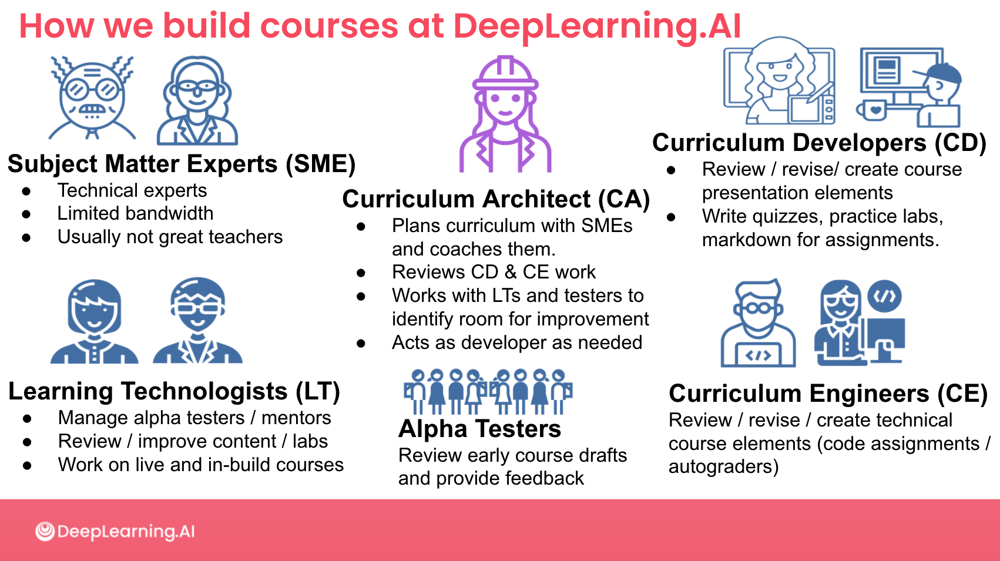
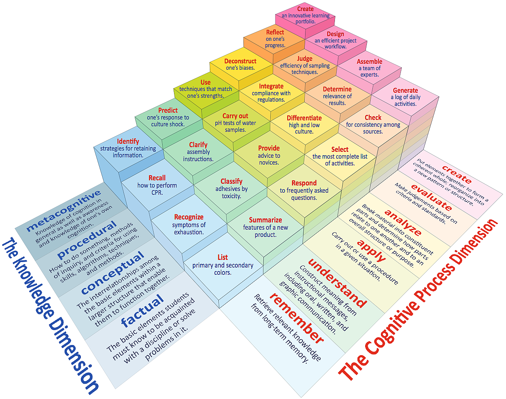

1 - Visie Onderwijskwaliteit
De HAN richt haar onderwijs flexibel in met de beste balans tussen digitale mogelijkheden en fysieke ontmoetingen.

2 - Plan

Learning Experiences
Learning Experience (LX) speelt een cruciale rol bij het ontwikkelen van boeiende leermaterialen voor het hoger onderwijs. Een goed ontworpen LX bevordert studentenbetrokkenheid, kennisbehoud en personalisatie. Het stimuleert ook samenwerking, sociale interactie en de relevantie van het geleerde voor de echte wereld. Bovendien biedt het waardevolle feedback voor voortdurende verbetering. Een goede LX, is de bevordert effectief leren en stimuleert de groei van studenten.
- Hoe is het ontwerpteam ingericht?
- Welke plek heeft LX in het ontwerp?
- ….
3 - Bouw
Tekst
Creating Courses
Een goed geconstrueerde cursus begint met een course outline. Deze bevat de volgende belangrijke elementen: cursusinformatie, doelen, leerresultaten, cursusinhoud, leeractiviteiten, beoordelingscriteria, leerbronnen, planning en regels. Het helpt docenten en studenten om de cursus duidelijk te begrijpen en te volgen.

- Tekst.
4 - Test
Tekst
Roles and Permissions
Tekst
- Tekst.
5 - Lanceer
Tekst
Enrolling Learners
Tekst
- Tekst.
6 - Uitvoering
Tekst
Engaging Learners
Learner Engagement is een maatstaf die de hoeveelheid en kwaliteit van de deelname van een student aan studieprogamma weerspiegelt. Het toont ook de interactie en samenwerking van een student met medestudenten en docenten.
- Tekst.
7 - Observeer
Tekst
Monitor Progress
Tekst
- Tekst.
8 - Evalueer
Tekst
Tracking Learner Performance
Tekst
- Tekst.
9 - Innoveer
Tekst
Constructive Alignment
Constructive Alignment is een krachtig principe voor onderwijsontwerp. Het helpt bij het ontwerpen van cursussen, leerplannen en het nemen van beslissingen over cursusactiviteiten en materialen. Bovendien kan het worden gebruikt om de relatie tussen de cursusactiviteiten en beoordeling uit te leggen. Dus, op de vraag: "komt dit in het examen?" kun je het antwoord koppelen het cursusprogramma.
- Tekst.